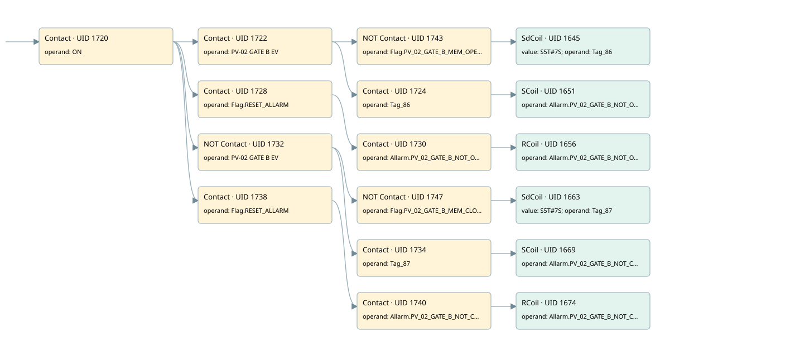

pv02
allarms 1 · 검색 색인 순서 38 · 원본 내부 NID 추정 45
백업 PLF 원본의 3069419 바이트 위치에서 복원한 XML. 검색 문서 1818의 객체 키 161022007862000000000000와 연결했다. 이름 해석 19/19개. 남은 RefId는 상수 또는 미해석 참조다.
연결 구조 다시 그리기
원본 Part/PCon/Wire를 이용한 연결도다. TIA 화면의 래더 배치 또는 실행 결과를 재현한 그림은 아니다. 핀 연결은 아래 표와 원본 XML을 기준으로 읽는다. 노드 위에 마우스를 두면 피연산자 이름을 볼 수 있다.

접점·코일·블록과 피연산자
| Part UID | Gate | Negated 핀 | 연결 피연산자 |
|---|---|---|---|
| 1720 | Contact | operand = ON | |
| 1722 | Contact | operand = PV-02 GATE B EV | |
| 1743 | Contact | operand | operand = Flag.PV_02_GATE_B_MEM_OPEN |
| 1645 | SdCoil | value = S5T#7S; operand = Tag_86 | |
| 1724 | Contact | operand = Tag_86 | |
| 1651 | SCoil | operand = Allarm.PV_02_GATE_B_NOT_OPEN | |
| 1728 | Contact | operand = Flag.RESET_ALLARM | |
| 1730 | Contact | operand = Allarm.PV_02_GATE_B_NOT_OPEN | |
| 1656 | RCoil | operand = Allarm.PV_02_GATE_B_NOT_OPEN | |
| 1732 | Contact | operand | operand = PV-02 GATE B EV |
| 1747 | Contact | operand | operand = Flag.PV_02_GATE_B_MEM_CLOSE |
| 1663 | SdCoil | value = S5T#7S; operand = Tag_87 | |
| 1734 | Contact | operand = Tag_87 | |
| 1669 | SCoil | operand = Allarm.PV_02_GATE_B_NOT_CLOSE | |
| 1738 | Contact | operand = Flag.RESET_ALLARM | |
| 1740 | Contact | operand = Allarm.PV_02_GATE_B_NOT_CLOSE | |
| 1674 | RCoil | operand = Allarm.PV_02_GATE_B_NOT_CLOSE |
접점 경로를 펼친 조건식
Contact·O/A·비교기의 원본 연결을 읽기 쉽게 펼친 보조 해석이다. POWER는 전원 레일 시작을 뜻한다. 호출 블록·에지·타이머의 내부 동작과 다중 쓰기 순서는 이 표로 실행 검증하지 않았다. 미해석 핀과 RefId는 원문 연결표에서 확인한다.
| UID | 동작 | 대상 | 원본 접점 경로 | 내용 |
|---|---|---|---|---|
| 1645 | SdCoil | Tag_86 | ((ON AND PV-02 GATE B EV) AND NOT [Flag.PV_02_GATE_B_MEM_OPEN]) | 시간 동작 SdCoil; 타이머 의미 추가 확인 / 시간 인자 S5T#7S |
| 1651 | SCoil | Allarm.PV_02_GATE_B_NOT_OPEN | ((ON AND PV-02 GATE B EV) AND Tag_86) | 조건 성립 시 Set |
| 1656 | RCoil | Allarm.PV_02_GATE_B_NOT_OPEN | ((ON AND Flag.RESET_ALLARM) AND Allarm.PV_02_GATE_B_NOT_OPEN) | 조건 성립 시 Reset |
| 1663 | SdCoil | Tag_87 | ((ON AND NOT [PV-02 GATE B EV]) AND NOT [Flag.PV_02_GATE_B_MEM_CLOSE]) | 시간 동작 SdCoil; 타이머 의미 추가 확인 / 시간 인자 S5T#7S |
| 1669 | SCoil | Allarm.PV_02_GATE_B_NOT_CLOSE | ((ON AND NOT [PV-02 GATE B EV]) AND Tag_87) | 조건 성립 시 Set |
| 1674 | RCoil | Allarm.PV_02_GATE_B_NOT_CLOSE | ((ON AND Flag.RESET_ALLARM) AND Allarm.PV_02_GATE_B_NOT_CLOSE) | 조건 성립 시 Reset |
원본 배선 연결
| Wire UID | 동일 Wire 연결 끝점 |
|---|---|
| 1742 | Powerrail {} ↔ Part 1720.in |
| 1694 | ORef 1675 (ON) ↔ Part 1720.operand |
| 1721 | Part 1720.out ↔ Part 1722.in ↔ Part 1728.in ↔ Part 1732.in ↔ Part 1738.in |
| 29 | ORef 30 (PV-02 GATE B EV) ↔ Part 1722.operand |
| 1723 | Part 1722.out ↔ Part 1743.in ↔ Part 1724.in |
| 1746 | ORef 1744 (Flag.PV_02_GATE_B_MEM_OPEN) ↔ Part 1743.operand |
| 21 | Part 1743.out ↔ Part 1645.in |
| 1696 | ORef 1677 (S5T#7S) ↔ Part 1645.value |
| 1697 | ORef 1678 (Tag_86) ↔ Part 1645.operand |
| 1698 | ORef 1679 (Tag_86) ↔ Part 1724.operand |
| 22 | Part 1724.out ↔ Part 1651.in |
| 1701 | ORef 1681 (Allarm.PV_02_GATE_B_NOT_OPEN) ↔ Part 1651.operand |
| 1703 | ORef 1682 (Flag.RESET_ALLARM) ↔ Part 1728.operand |
| 1729 | Part 1728.out ↔ Part 1730.in |
| 1704 | ORef 1683 (Allarm.PV_02_GATE_B_NOT_OPEN) ↔ Part 1730.operand |
| 1731 | Part 1730.out ↔ Part 1656.in |
| 1706 | ORef 1684 (Allarm.PV_02_GATE_B_NOT_OPEN) ↔ Part 1656.operand |
| 31 | ORef 32 (PV-02 GATE B EV) ↔ Part 1732.operand |
| 1733 | Part 1732.out ↔ Part 1747.in ↔ Part 1734.in |
| 1750 | ORef 1748 (Flag.PV_02_GATE_B_MEM_CLOSE) ↔ Part 1747.operand |
| 23 | Part 1747.out ↔ Part 1663.in |
| 1708 | ORef 1686 (S5T#7S) ↔ Part 1663.value |
| 1709 | ORef 1687 (Tag_87) ↔ Part 1663.operand |
| 1710 | ORef 1688 (Tag_87) ↔ Part 1734.operand |
| 24 | Part 1734.out ↔ Part 1669.in |
| 1713 | ORef 1690 (Allarm.PV_02_GATE_B_NOT_CLOSE) ↔ Part 1669.operand |
| 1715 | ORef 1691 (Flag.RESET_ALLARM) ↔ Part 1738.operand |
| 1739 | Part 1738.out ↔ Part 1740.in |
| 1716 | ORef 1692 (Allarm.PV_02_GATE_B_NOT_CLOSE) ↔ Part 1740.operand |
| 1741 | Part 1740.out ↔ Part 1674.in |
| 1718 | ORef 1693 (Allarm.PV_02_GATE_B_NOT_CLOSE) ↔ Part 1674.operand |
식별자 해석 근거 19개
| ORef UID | RefId | 이름 | IdentXmlPart 파일 | 해석 방법 |
|---|---|---|---|---|
| 1675 | 1 | ON | 0658-IdentXmlPart.xml | UID/RID + search-text + NID agreement |
| 30 | 165 | PV-02 GATE B EV | 0658-IdentXmlPart.xml | UID/RID + search-text + NID agreement |
| 1744 | 167 | Flag.PV_02_GATE_B_MEM_OPEN | 0657-IdentXmlPart.xml | UID/RID + search-text + NID agreement |
| 1678 | 188 | Tag_86 | 0658-IdentXmlPart.xml | UID/RID + search-text + NID agreement |
| 1677 | 320 | S5T#7S | 0656-IdentXmlPart.xml | literal candidate: UID/RID/NID + nearby named declarations + search-text agreement |
| 1679 | 188 | Tag_86 | 0658-IdentXmlPart.xml | UID/RID + search-text + NID agreement |
| 1681 | 189 | Allarm.PV_02_GATE_B_NOT_OPEN | 0657-IdentXmlPart.xml | UID/RID + search-text + NID agreement |
| 1682 | 13 | Flag.RESET_ALLARM | 0657-IdentXmlPart.xml | UID/RID + search-text + NID agreement |
| 1683 | 189 | Allarm.PV_02_GATE_B_NOT_OPEN | 0657-IdentXmlPart.xml | UID/RID + search-text + NID agreement |
| 1684 | 189 | Allarm.PV_02_GATE_B_NOT_OPEN | 0657-IdentXmlPart.xml | UID/RID + search-text + NID agreement |
| 32 | 165 | PV-02 GATE B EV | 0658-IdentXmlPart.xml | UID/RID + search-text + NID agreement |
| 1748 | 169 | Flag.PV_02_GATE_B_MEM_CLOSE | 0657-IdentXmlPart.xml | UID/RID + search-text + NID agreement |
| 1687 | 190 | Tag_87 | 0658-IdentXmlPart.xml | UID/RID + search-text + NID agreement |
| 1686 | 320 | S5T#7S | 0656-IdentXmlPart.xml | literal candidate: UID/RID/NID + nearby named declarations + search-text agreement |
| 1688 | 190 | Tag_87 | 0658-IdentXmlPart.xml | UID/RID + search-text + NID agreement |
| 1690 | 191 | Allarm.PV_02_GATE_B_NOT_CLOSE | 0657-IdentXmlPart.xml | UID/RID + search-text + NID agreement |
| 1691 | 13 | Flag.RESET_ALLARM | 0657-IdentXmlPart.xml | UID/RID + search-text + NID agreement |
| 1692 | 191 | Allarm.PV_02_GATE_B_NOT_CLOSE | 0657-IdentXmlPart.xml | UID/RID + search-text + NID agreement |
| 1693 | 191 | Allarm.PV_02_GATE_B_NOT_CLOSE | 0657-IdentXmlPart.xml | UID/RID + search-text + NID agreement |
검색 코드 보조 자료
참조 명칭을 찾기 위한 자료이며 실행 순서나 AND/OR 관계는 위 연결표로 확인한다.
"on" "pv-02 gate b ev" "flag".pv_02_gate_b_mem_open "tag_86" s5t#7s "flag".reset_allarm "allarm".pv_02_gate_b_not_open "allarm".pv_02_gate_b_not_open "pv-02 gate b ev" "flag".pv_02_gate_b_mem_close "tag_87" s5t#7s "tag_87" "allarm".pv_02_gate_b_not_close "flag".reset_allarm "allarm".pv_02_gate_b_not_close "allarm".pv_02_gate_b_not_close "tag_86" "allarm".pv_02_gate_b_not_open